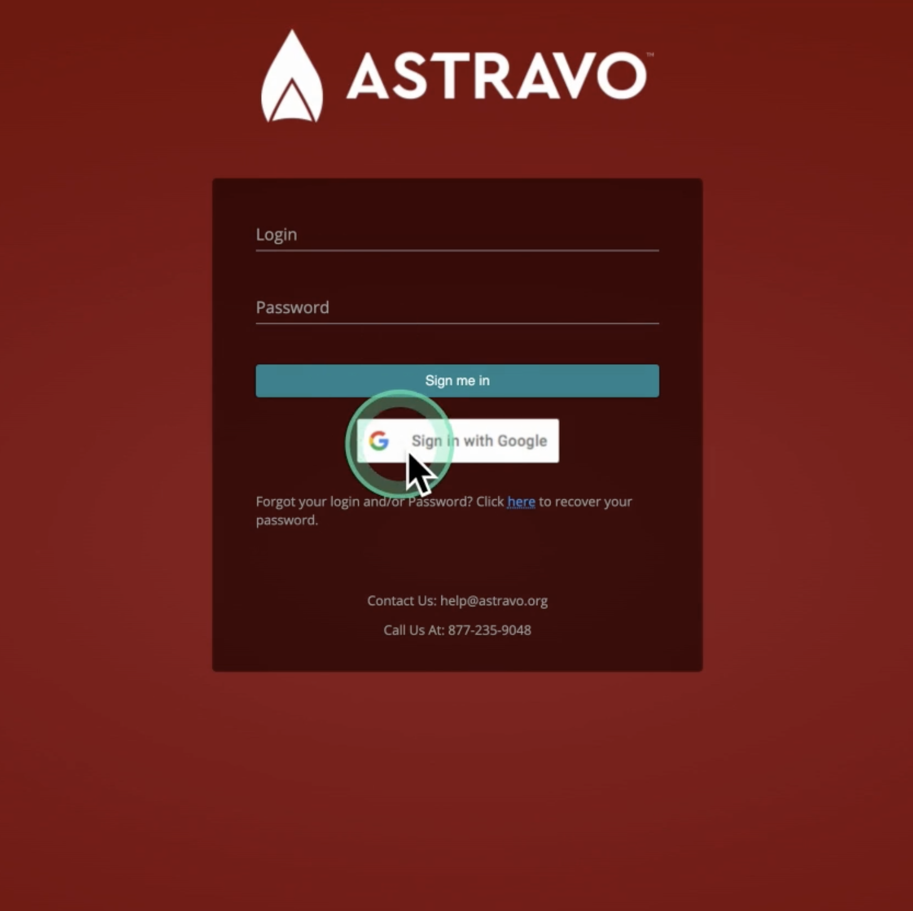
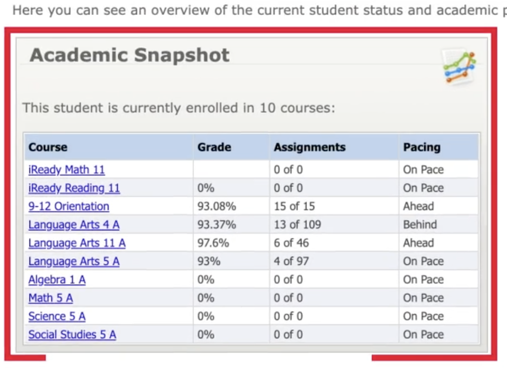
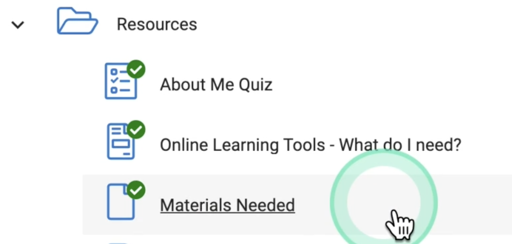

-
How to log in to Gmail
- Go to gmail.com. If you're
already a Gmail user, you might be logged in already to your
personal account. To add an account:
- Click on the circular profile image at the top right and
select Add another account.
- Enter your school provided email and password.
- This was emailed to you from help@astravo.org - titled
"Welcome! Here are your login credentials..."
- If this is your first time logging in...Change your
password! The default password you were given is not a secure
password. Please follow these steps to change it as soon as
possible!
- Click on the G Suite box with the circular profile image
at the top right, and then click Manage your Google
Account
- Click Security in the left-hand menu
- Click Password
- Follow the prompts - entering your old password and new
password
- Make sure to make your password something you can
remember!
- In your school portal, use the Sign in with Google
button!
-
Basics of your School Porta
- Astravo students & families go to my.astravo.org to access the Learning
Portal.
- Colorado Virtual Academy students & families go to
my.coloradovirtualacademy.org
to access the Learning Portal.
- Colorado Digital Academy students & families go to
my.coloradodigitalacademy.org
to access the Learning Portal.
- Click the Sign in with Google button
- If you haven't set up your Gmail account yet, please
refer back to the Welcome Email to learn more.

- You will see your Dashboard with your Academic
Snapshot, easy access to Messages, and more useful
information.
- In th Academic Snapshot box, you will see the
classes that you are currently enrolled in.
- Middle and high school students should also take the
Orientation class to learn how to navigate your
classes. Kindergarten through 5th grade students will not see
a separate Orientation class on their Academic
Snapshot because it is built in to your classes.
- We recommend that all studenets take i-Ready
Reading and i-Ready Math assessments. Three times
a year we administer iReady assessments to determine how
students are growing in reading and math and to determine how
to best support you.
- If school hasn't started yet, click on Academic
Snapshot on the menu on the left to show you what classese
await once school starts.
- Our Scheduling Team encourags you to review your courses
and let us know if you have any questions or if changes need
to be made.
- You have 15 days from the start of the school year
to change classes without any penalty.
- To access a class, click on the name of the class in your
Dashboard.
- It will take you to the Student App page with a
course card where you cand dive into the course.
- We're so glad that you've chosen to school with us! You can
contact us by emailing help@astravo.org with questions.
-
Tips for navigating courses
- Go to your school portal
- From your Dashboard, click on the name of a course
in the Academic Snapshotbox.

- This takes you to the Student App page where you can
access your individual courses.
- Click on a course card to "go to" that class
- In the course you'll find ...
- A Resources folder
- Here, you'll find the Materials and supplies
that you'll need for that class.

- As well as other helpful information like How To
Videos
- A Teacher Information and Links folder
- In the Teacher Information and Links folder,
you'll find Teacher Contact Information so that
you can reach your teacher.
- You'll also find Synchronous Support
options.
- This is where you'll find when your live classes
are scheduled, how to find the recordings if you miss
the live class, and how to sign up for one-on-one
time with your teacher during their office
hours.
- At the top of each course you'll find a To Do List.
- This shows you what upcoming assignments you have due and
will help you stay on pace.
- To access your Calendar, click on the three
horizontal lines on the top left of your screen.
- Next, click on the Calendar icon.
- You will see a day-by-day view of what you should be
doing in all of your classes.
- A check mark will appear next to assignments
that you have already completed, so feel free to work
ahead.
- Clicking on an assignment in the Calendar will take
you directly to the activity.
- You can move forward and backward between activities by
clicking on Next Activity and Previous
Activity at the bottom of your screen.
- You might want to go back and review an activity before
taking a quiz.
- When an activity is complete, that enables you
to take a quiz.
- If you try to skip an activity, you will see a message
that says that you must successfully complete the
activities before viewing the item.
- Hitting the back arrow at the top left will take you back to
where you previously were.
- Using the three horizontal lines:
- Click on Student App...
- ...to take you back to your Course Cards.
- We’re so glad that you’ve chosen to school with us! You can
contact us by emailing help@astravo.org with questions.
-
Open House
- 00:00-1:20 Meet Mrs. April Nelson, Astravo Principal, and
four Language Arts teachers
- 1:25 - Strong Start to Online Learning
- Online schooling is safe and reliable.
- Our curriculum and teachers are excellent.
- 3:40 - 5:45 Family Portal: The Dashboard
- The Dashboard allows you to quickly monitor grades, read
important messages, review the time spent in school, and
monitor progress in classes.
- The Academic Snapshot can tell you the number of
assignments that a studnet has completed in a specific class,
their current class grade based on the assignments that the
student has completed, and review their pacing. It is
important to pay attention to the student's overall grade,
too.
- 5:46 - 7:00 Th eLearning Management System: Buzz
- Each class has a course card. Click into the course card
to access the lessons. You can also find more details about
the student's grade and pacing.
- Our classes have dynamic pacing, which means that if your
child misses a day of school, the student's lessons are moved
to th next day. Th system keeps track of what you child needs
to complete in order to finish on time.
- The system is user-friendly, and K-5 classes include
lessons about navigating the plaform and middle and high
school students have an Orientation class to review this
information.
- 7:00 - 9:12 Online School Materials and Attendance
- Kindergarten through 5th grade students will receive
paper materials, like workbooks. Sixth through twelfth grade
students will have most of their materials online, and it is
important to review the school supplies for each course in
case you need general household items for a science lab or
other activity.
- It's a good idea to have general school supplies
available, like notebooks, pens, and pencils.
- Attendance logs are on your student's dashboard, and
should be completed each Monday. The form will be
pre-populated, and you click save.
- Classes will become available once your child's
attendance is completed.
- 9:13 - 10:56 Submitting an Assignment
- Some assignments will have to be submitted as PDFs, and
it is very important to download the PDF first. It can be
tempting to type directly into the PDF, but your child's work
will not save.
- Elementary students with workbooks can submit their work
by taking pictures of the page and sending the image to the
teacher.
- 10:57 - 12:00 Strong Start to Online Learning
- We have exciting curriculum choices, including a robust
electives list, which you can find at astravo.org by
scrolling all the way to the bottom of the page.
- Orientation is built into K-5 courses and 6-12 have an
Orientation course that can be found on the Academic Snapshot
box.
- K-5 students have paper workbooks, and they are also
available online as PDFs.
- 12:01 - 16:20 Teacher Role and Learning Coach Role
- Teachers support your learner in a variety of ways.
- Learning Coaches, oftentimes parents, support their
learners in a variety of ways.
- 16:21 - 20:36 Where you should start
- Login using the credentials that were emailed to you. You
will not be able to access lessons unless you use your
school-created Google account.
- Look at the Dashboard to check your schedule. Your child
can add or drop classes 15 days from the start of school
without penalty.
- Complete Orientation! You’ll learn about how to go
through your classes, what to expect with grading, and
information on how to submit assignments.
- Take the i-Ready reading and math assessments. They are
listed on the Academic Snapshot as classes. Your child will
take the assessments three times a year, and they tell us a
lot about your child as a learner in terms of how they’re
doing in reading and math, and if we need to provide
additional support.
- i-Ready also includes lessons that are geared towards
what your child needs. For example, if your child is
struggling with math, the program will give them math lessons
that are tailored to their specific needs.
- We recommend that students spend about 30-45 minutes a
day on i-Ready. i-Ready is adaptive, meaning that if your
child is doing well in reading or math, then the assessments
will become more challenging. Your child can take the
assessment in multiple settings, and any progress will be
lost if the i-Ready assessment is not completed in 40
days.
- You can quickly email your teachers using the airplane
icon or through google hangouts.
- Tell your friends and family! Send them the 877-235-9048
phone number if friends or family have questions about our
program. They can also contact us at help@astravo.org
- 20:37 - 21:40 Ongoing Support
-
Virtual Walk To Class